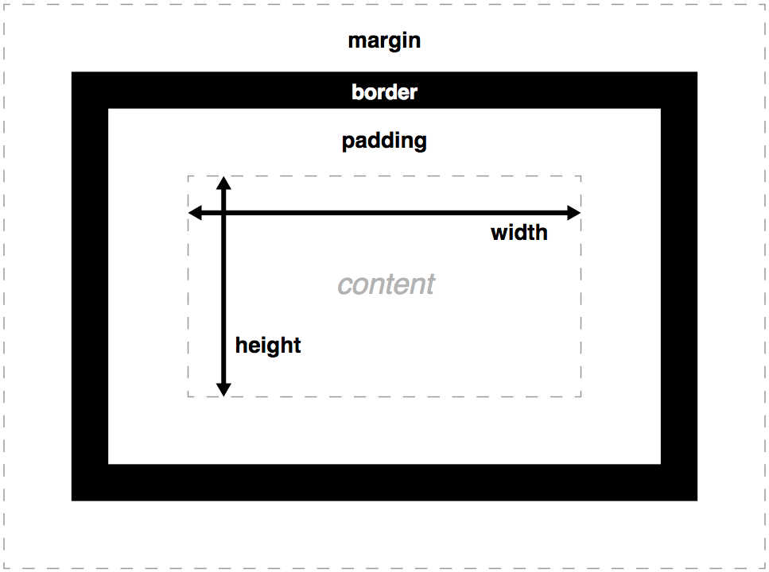

How to insert CSS
Cascading style sheets (CSS) is a language used to control the styling of HTML documents, controlling how elements should be displayed through a collection of rulesets (though often their name gets shortened to rules).
There are three ways to add CSS to a HTML document - inline styling, an external style sheet and an internal style sheet.
Inline styling is done by using the style attribute inside your HTML tags as we briefly saw last week.
External style sheets are text files with a .css file extension that you link to from the head of a HTML document - as we did for or boilerplate or as seen if you view the source code for this web page.
Internal style sheets are created by using the <style> tag in your HTML document and you can write your CSS there instead. This tag tells the browser that anything inside it should be read as CSS instead of HTML. You can see an example of this on lines 13 - 48 of this web page's HTML document.
Cascading style sheets are so named because the styling details cascade into a 'virtual' style sheet, a combination of all styling details present through all of the following methods, with the most recent style rules processed employed for each element, so long as they follow this order of priority:
- Inline style - any CSS declared with the style attribute inside of a HTML element will override anything from a CSS file or tag
- External and internal style sheets - whichever <link> import or <style> tag is lower in the HTML document will override any others
- Browser defaults - when not referenced in any of the above all elements will display via the built in CSS rules, which change slightly between browsers
The way CSS overrides itself is an important feature of how the language is used to change how the web page is displayed in different contexts. Later this semester we will be looking at how we can take advantage of this to create responsive and dynamic designs.
Task: Move the <link> tag on line 50 of the HTML source code above the opening of the <style> tag and notice how the placment order can be used to override certain styles.
Writing CSS Rulesets

CSS is written using the following syntax:
The ruleset for a given selector is declared using property and value pairs that are seperated by a colon, with each declaration statement ended by a semi-colon. The whole ruleset for the selector is displayed as a contained block indicated by the use of curly brackets and often contains multiple property and value pairs.
!IMPORTANT NOTE! - HTML, CSS and JavaScript use American English spelling 🙄 so for example while here in the instructions I refer to using a colour be sure to spell it color in your property names.
Selectors
Selectors indicate which HTML elements you want the ruleset to apply to. All of the following can be used as selectors:
Elements - such as <h1>, <p>, <div>, etc - selected in the following way:
elementname { }
for example:
h1 { }
Classes - groups of elements as defined using the HTML class attribute - selected in the following way:
.classname { }
for example:
.sections { }
Ids - individual elements as defined using the HTML id attribute - selected in the following way:
#idname { }
for example:
#selectors { }
If multiple selectors are used seperated by commas before the ruleset brackets { } then everything inside will be applied to each of the selectors named (see lines 59-68 of the linked style.css file in the source code).
If multiple selectors are used without
being seperated by commas indicates a parent/child relationship - for example the ruleset:
ul li { }
would be applied to all <li> elements inside of <ul> elements - so by extension the ruleset:
ul li a { }
would be applied to all <a> elements inside of <li> elements inside of <ul> elements (see lines 100-111 of the linked style.css file in the
source code).
Tip - all selectors are spelling and case sensitive, if they don't seem to be working for you the first thing to do is double check how they're typed.
Properties and Values
Now that we know how to select which element to style with our CSS how do we know what we can change their style to? The list of available CSS properties is quite long so while you're starting out I'd suggest using a search engine to find the one you're looking for - some are easy to remember like color to change the text colour and background-color to change the element's background colour but for example if you wanted to know how to change the rounded corners of an element's border a quick search for "css property rounded border corner" will lead you to the border-radius property.
The values you can assign to each property is easier to keep track of - some need specific keywords related to the property but most take the kind of generic values you might expect, such as colours, detailed below. If you're unsure about what value to use again the search engine is a good place to start, for example a quick search for "mdn css property color" returns the MDN page telling you what values the color property will accept along with some live code examples.
Common CSS value type: Colour - CSS supports 140 standard colour names but colours can also be set using RGB or RGBA values and HEX values - view the source code for examples and remember there are many colour pickers online you can use to select individual colours, convert between colour value types and even generate whole colour schemes.
Task: Combine what you've learnt so far to add text colour and background colour styling to some HTML elements in your assignment1 project by writing rulesets in its style.css file.
Tip - VS Code has a useful context sensitive autocomplete feature, if you start typing the property or value in CSS it'll pop up with appropriate suggestions, very handy if you think you know the name or value but can't quite remember it's exact name off the top of your head.
The Box Model
HTML elements can be thought of as boxes when displayed on the web page and each has the following parts shown in the image to the right - content, padding, border and margin - all of which can be changed using CSS using length values.
Content - space taken up by whatever is inside the element, be that text, image or another element
Padding - the space between the content and the border
Border - if declared as part of a CSS ruleset you can render a border around the element in a range of styles and sizes
Margin - the space between the border and other elements on the web page
Common CSS value type: Length - CSS accepts many different units of measurement but here are are some key ones that are useful to know:
- px (pixels) is an absolute unit based directly on the pixel resolution of the device displaying the web page - for example width: 960px might take up half
the screen, a quater of the screen or even flow off the edge of the screen depending on the device's resolution
- % is a relative unit that uses the parent of the selected element as reference - for example width: 50% would set the element's width to half the size of
its parent element's width
- vw & vh (viewport width & viewport height) are relative units that use the viewport (the part of the web page currently visible in the browser) as
reference - for example width: 50vw would set the element's width to half the size of the visible web page (they work in a similar manner to percentages - 1vh = 1% of the
viewport height)
- em is a relative unit that uses the selected element's font size as reference - for example the combination of font-size: 16px; width: 2em; would set it
element's width to twice the font size, so 32px
- rem is a relative unit that works exactly like em but instead uses the root HTML element's font size as reference
Task: Add some structure and spacing to your assignment1 project by combining length values with css properties based on the different parts of the box model - if you don't know what properties to use experiment, use software hinting (autocomplete) and look online, as well as at the source code of this web page.
Tip - Borders need a few different properties before they'll show up, border-styles, border-color and border-width. You can declare each seperately as seen in the source code for this web page or if you want to get more advanced you can declare them all together in the border property - check the MDN page on CSS borders for more details and examples of how this works.
Text, Fonts and Links
CSS is also used to style text and links and control fonts.
Text is most commonly coloured, aligned and decorated.
The same is true for links but because links involve different states that can be changed through interaction we can use some further variants on selectors called pseudo selectors - for example each of these rulesets would only be applied if the <a> element meets the noted state requirements:
a:link { } - a normal, unvisited link
a:visited { } - a link the user has visited
a:hover { } - a link when the user mouses over it
a:active { } - a link the moment it is clicked
Tip - Not all pseudo selectors will work for every element, however some like :hover can generally be used across the board. As with all CSS the order in which the rulesets are placed matters so make sure to include any pseudo selectors underneath the ruleset of the base selector in your CSS file.
Fonts are set by specifying a particular font using the font-family property often applied to the <body> element so it's inherited by all of its children. The chosen font must then be installed on the user's computer - font-families such as Times or Georgia and generic families such as such as serif and sans-serif are all what's known as web safe fonts and can reasonably be expected to be installed on any system.
You can then also specify font-size using either px, em or rem units. Due to their relative nature em and rem can be very useful as they will both scale based on the user's browser and operating system settings, so if they have text scaling enabled it would also be applied on the web page.
Further, you can use the @font-face selector to define a specific font from a file, linking to it locally on your site or on the web allowing you to use fonts not included on the web safe list - view source for an example. Note that you'll need to use font-family to give your font a name of your choice and src to link to your font file, which will usually have a .woff, .woff2 or .ttf extension. Once defined with @font-face you can then refer to it in other rulesets using the name you chose.
Task: Style the text and link in your assignment1 project and then download and include an open-source font in your style using the @font-face selector.
Tip - There are many places to source open-source fonts online, while Google Fonts can be a great resource the amount of different fonts can be overwhelming if you don't have a specific thing you're looking for. Sometimes smaller collections like Open Foundary or Velvetyne can be more inspiring - just don't forget to check their terms of use, while free some require you to credit the type designer or foundry where appropriate.
Controlling layout
The trickiest thing about CSS is controlling the layout of your website - to start with the key properties are display, max-width, overflow and float.
Display - allows you to set how elements are displayed - block, inline, none and more
Max-width - allows you to start to control how much space your block elements take up, as you can see with the section elements in the source code
Overflow - controls what happens when content 'overflows' the element it is part of - find overflow in the source of this page and change the setting to see what happens, overflow: auto; is key for displaying images cleanly in divs
Float - is used to allow elements to shift around other elements - like the images in the other sections on this page - have a play with changing their value to see what happens.
Task: Try to improve the read and useability of your assingnment1 project by controlling the layout using display, max-width, overflow and float.
Tip - Keeping elements centred has historically been a little trickier than you might expect, generating many popular programming memes. I've used a lightly older trick on this page to centre the sections: max-width: 67%; margin: 0 auto; which sets their width to two thirds of their parent element's width and then sets both the left and right margins to equally split the remaining third using the auto value.
Favicons
Favicons are small images used to represent websites in browser tabs.
Task: Figure out how to add a favicon to your assignment1 project that will appear in the browser tab it opens in.
Key Task for the Week
Your assignment1's style.css should now contain a number of different CSS rulesets changing the style of your assignment1's index.html page, including text colour, background colour, fonts, element spacing and page layout. Once you've finished off entering and answering this week's research questions make sure to go back through and revise your styling to make sure it's appropriate for the context of communicating your research information ahead of your final submission. You shouldn't need to make huge changes - while I'd love to see you express yourself through the stylistic design it by no means needs to be complicated, sometimes simple is best when focusing on information design for clear communication.